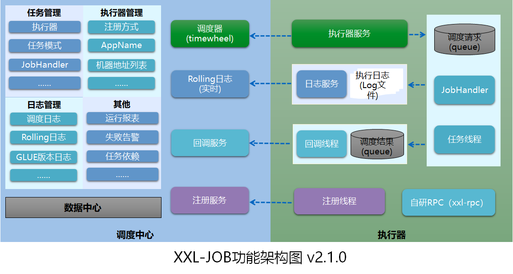

背景：
定时任务，是业务中避免不了的模块，很多情况下，有些业务必须是有定时执行的概念。
基于spring-boot作为框架的开发，可以选择spring的定时任务模块，使用注解@Scheduled，配上相应的cron时间表达式，就能定义一个定时任务。
随着现在微服务的日益重要，业务模块解耦愈来愈受欢迎，所以，能把定时任务与业务做抽离，也是很好的思想设计。
github上的xxl-job，就是很好的定时任务功能模块。引入xxl之后，我们需要做的只是在xxl上进行相关执行器的配置，之后任务的调度就由xxl管理，开发人员只需实现好执行器的相关业务逻辑。
xxl-job介绍：
借鉴网上找到的图，简单介绍一下xxl-job机制：

可见，xxl对定时任务的实现有较全面的功能，包括定时器的调度、调度结果的回调记录、调度的具体日志、任务失败的警告、任务的重试机制。使用者可以通过引入xxl，对定时器进行系统的管理，同时，定时器相关的调度也可以与应用其他业务功能解耦，xxl只负责定时器相关。
需要说明的是：
- XXL-JOB调度模块默认采用并行机制，在多线程调度的情况下，调度模块被阻塞的几率很低，大大提高了调度系统的承载量。
- XXL-JOB的每个调度任务虽然在调度模块是并行调度执行的，但是任务调度传递到任务模块的“执行器”确实串行执行的，同时支持任务终止。
总结就是，xxl的调度，可以并发的通知调度。但是，xxl的执行器是采取队列的形式，既最终的各个执行器的执行，其实是串行的。
by the way:对于执行器的实现，需要根据具体业务具体考虑。如果同个定时器的执行时间差较短，容易发生并发问题的，需要注意定时器的幂等实现或者通过业务状态属性(例如可以给任务批次设置执行状态:未开始、进行中、执行结束等等)进行控制。
xxl-job使用：
关于应用如何引入xxl-job并且使用，在xxl-job官方文档已经有了详细的说明。
这里说一下，在xxl-job的操作页面，可以对不同的应用环境设置不同的定时器，这对集群部署的项目是很有必要的点。另外，也可在页面进行手动调用定时器、查看定时器执行结果、执行日志等等，也会有总的定时器执行统计，是一款很好的定时器管理工具。